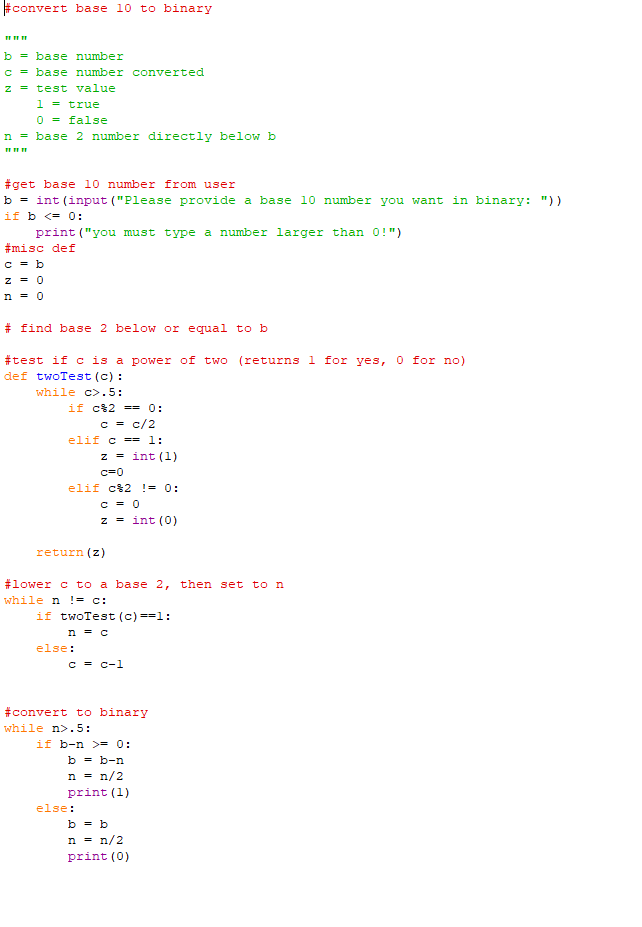
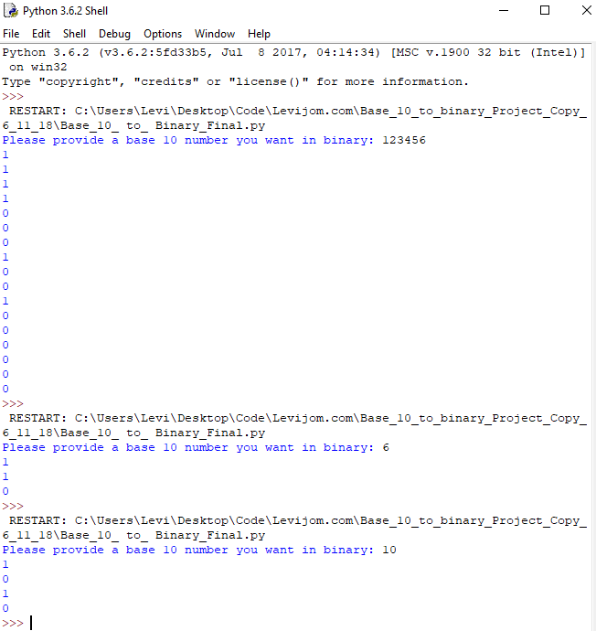

Using some of the most advanced computing algorithms available today, this page will help make better hiring decisions about potential employers
Though the majority of how it works must be kept secret, we can reveal the basics of how it works;
In short, the name of a prospective worker is entered in the box, the name is looked up in an advanced database, and if the subject is a viable worker, the verdict is returned as a hit.
We can say that our machine is, as far as could be told from our testing, 100% accurate!
Go ahead and try it. Simply enter the name of an employee below, and a highly accurate hiring decision will be presented
First Name: Last Name:
The file must be run within the python idle

The program starts with user input. It then looks to see if the number the user input it a power of two (2^some number). If it is, that number becomes n. If it is not, it finds closest power of two below it. Then the program tests to see if the base (user input) can be divided by n. When it can, it prints one, when it cannot, it prints a 0. Each time it tests if b is divisible by n, n gets divided by two, becoming the next lowest power of two. This test is run until n becomes 1, and our last digit in binary is stated.

I am currently working on creating a python checkers game. Once I finish it, I would like to try and set up a neural network that learns optimal playing strategies